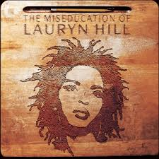

Illmatic (1994) is the debut studio album by Nas, widely regarded as one of the greatest hip-hop albums of all time. The album features introspective lyrics, complex wordplay, and production that blends traditional boom-bap with more experimental sounds. It explores themes of street life, poverty, and the complexities of growing up in Queens, New York.
Released in 1995, The Bends is Radiohead's second studio album and the pivotal release that transformed them from one-hit grunge contenders into alternative rock visionaries. Moving past the raw, straightforward style of their debut, Pablo Honey, the album paired soaring acoustic melodies with complex, layered three-guitar arrangements from Thom Yorke, Jonny Greenwood, and Ed O'Brien. Lyrically, Yorke captured intense themes of emotional isolation, physical alienation, and the disorienting pressure of sudden fame—mirroring the decompression sickness from which the record takes its name. With iconic tracks like "Fake Plastic Trees," "High and Dry," and "Street Spirit (Fade Out)," The Bends not only reshaped post-Britpop guitar music, but also laid the foundation for the band's experimental future.
